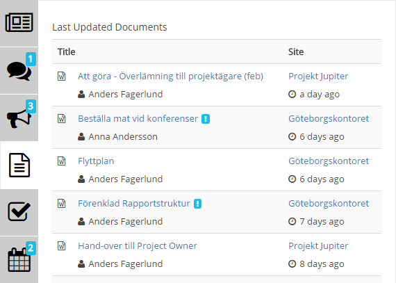
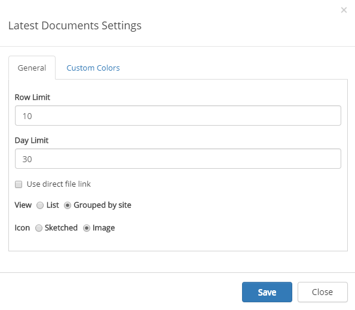
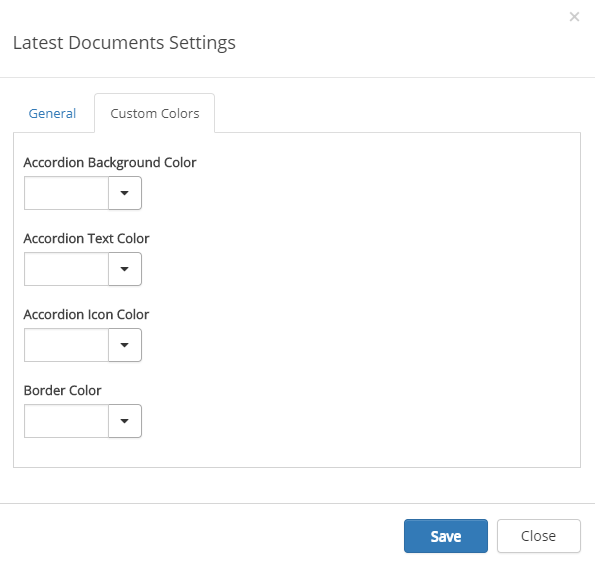

The Latest Documents control (also called Last Updated Documents) aggregates all documents that have been recently modified from all sites the user is following.
Note! The Latest Documents control is based on the search engine in SharePoint. It may take several minutes before an updated document is shown on the start page.
Latest Documents is often displayed in the Notification Panel, for example:

Settings for Latest Documents in the Notification Panel is set there, see:
Latest Documents can also be added as a separate control. To change the settings for the separate control, activate the Edit switch and click the settings gear.
This will open the settings dialog.
On this tab you can set the following:

You should primarily set colors through Theme colors in Omnia Admin (System/Settings/Default colors). If you still would like custom colors for the control, you can set them using this tab.
